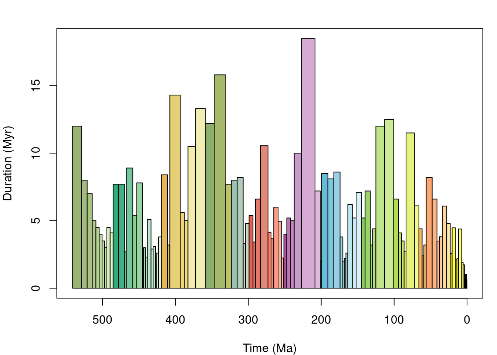
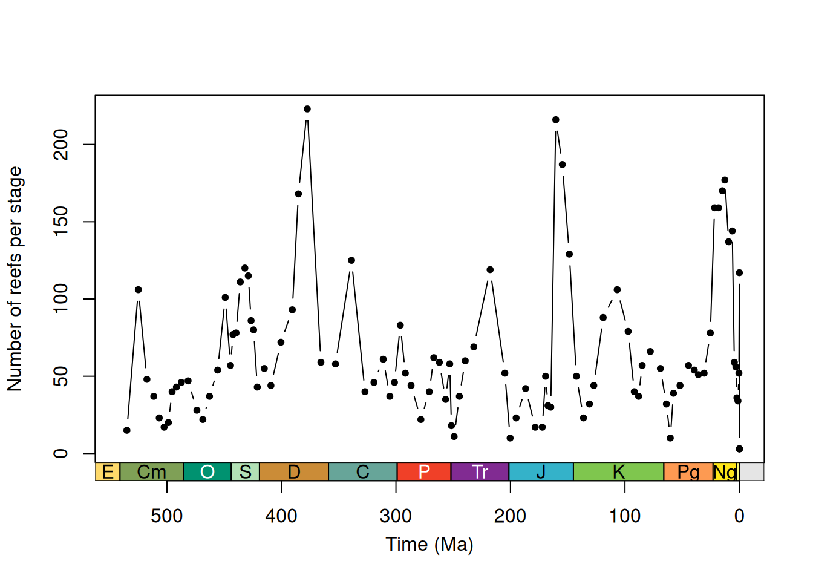
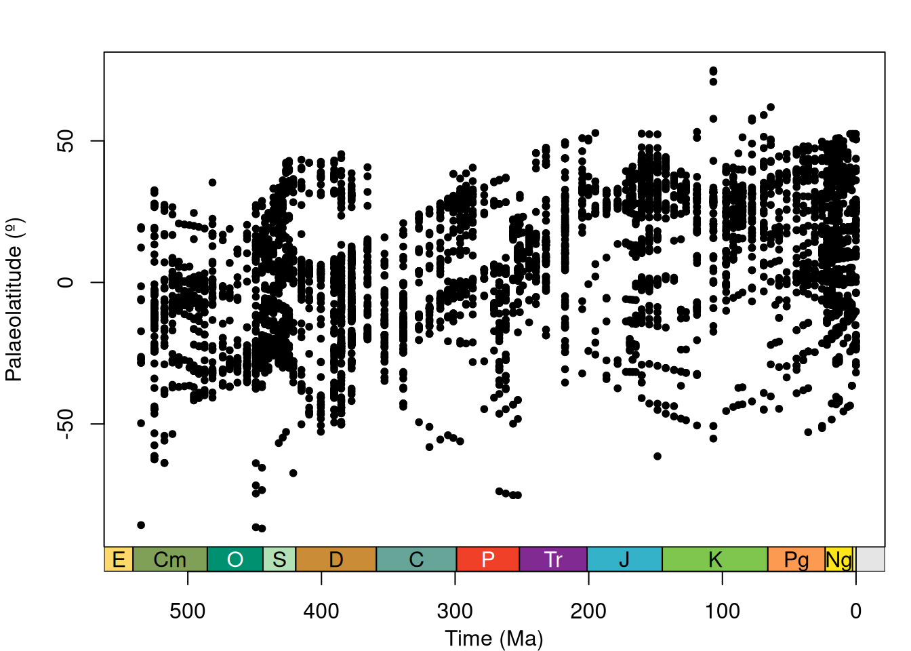
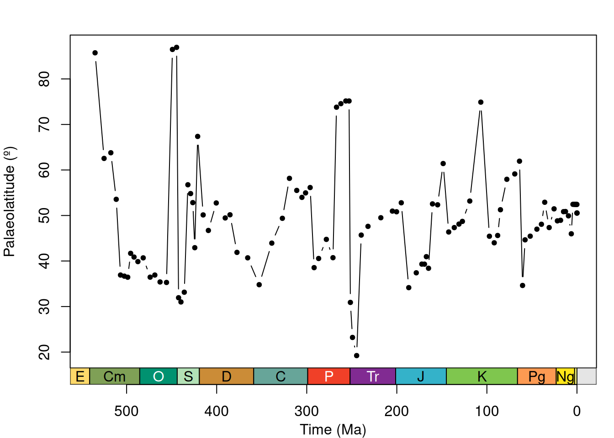
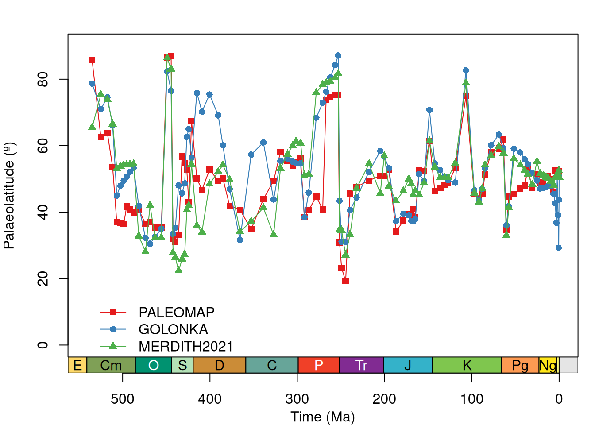

2026-11-05
In this tutorial, you will use palaeoverse to explore latitudinal trends in Phanerozoic reefs.
Along the way, you will meet many functions used in a typical palaeobiological workflow including exploring data, assigning a common time scale, binning occurrences, estimating palaeocoordinates, and summarising the results.
To help cement your knowledge, there are multiple exercises throughout this tutorial for you to work through.
___ are incomplete. Replace each ___ before running them locally.Coral reefs are highly sensitive to climate change, and their past distributions are thought to represent the latitudinal extent of tropical and subtropical conditions over geological timescales (Kiessling, 2001; Perrin & Kiessling, 2010).
However, interpreting this record is not straightforward. Continental drift means that the present-day location of a fossil reef does not necessarily reflect where it formed: occurrences now found at temperate latitudes may have been deposited in tropical settings, and vice versa.
Tracing the latitudinal distribution of reefs through time therefore requires reconstructing their palaeogeographic positions with a Global Plate Model. Moreover, recent work shows that palaeogeographic reconstructions can differ substantially among Global Plate Models, and this source of uncertainty must also be be considered (Buffan et al., 2023).
Here, we will address the question “how did the latitudinal distribution of reefs change through time?” while also considering differences in palaeogeographic reconstructions.
Let’s start by installing and loading the palaeoverse R package:
reefs datasetIn this tutorial, we will be using reefs for our analyses, a compilation of Phanerozoic reef occurrences (n = 4363) from the PaleoReefs Database (Kiessling & Krause, 2022).
Recall from the introduction that functions in palaeoverse are designed around the assumption that your data are stored in an occurrence data.frame, which is the expected input for almost all functions. The package includes two example occurrence datasets from different data sources: tetrapods and reefs.
reefs datasetLoad the reefs dataset:
reefs dataset r_number name formation system series
1 1 Tilkideligi Tepe Triassic Upper Triassic
2 2 Hydra Pantokrator Limestone Triassic Upper Triassic
3 3 Shiraho, W-Pacific Neogene Holocene
4 4 Aksu-Terziler area Triassic Upper Triassic
5 5 Adnet, Salzburg Triassic Upper Triassic
6 6 Rotelwand Triassic Upper Triassic
interval biota_main biota_sec lng lat country
1 lower Norian Calcisponges Stromatoporoids 30.3833 37.0333 Turkey
2 upper Carnian Corals Calcisponges 23.6333 37.3833 Greece
3 Recent Corals Algae 124.2500 24.3333 Pacific
4 Tuvalian Calcisponges Stromatoporoids 31.0333 37.8000 Turkey
5 upper Rhaetian Corals Calcisponges 13.1667 47.7000 Austria
6 Rhaetian Corals Calcisponges 13.1833 47.7000 Austria
authors
1 Riedel, P.
2 Schafer, P., Senowbari-Daryan, B.
3 Kayanne, H., Suzuki, A. & Saito, H.
4 Riedel, P.
5 Schafer, P.
6 Schafer, P.
title
1 Riffbiotope im Karn und Nor (Obertrias) der Tethys: Entwicklung, Einschnitte und Diversitatsmuster. -
2 The Upper Triassic Pantokrator Limestone of Hydra (Greece): An example of a prograding reef complex. -
3 Diurnal changes in the partial pressure of carbon dioxide in coral reef water. -
4 Riffbiotope im Karn und Nor (Obertrias) der Tethys: Entwicklung, Einschnitte und Diversitatsmuster. -
5 Fazielle Entwicklung und palokologische Zonierung zweier obertriadischer Riffstrukturen in den Nordlichen Kalkalpen (Oberrhat"-Riff-Kalke, Salzburg)
6 Fazielle Entwicklung und palokologische Zonierung zweier obertriadischer Riffstrukturen in den Nordlichen Kalkalpen (Oberrhat"-Riff-Kalke, Salzburg)
year
1 1990
2 1982
3 1995
4 1990
5 1979
6 1979'data.frame': 4363 obs. of 14 variables:
$ r_number : chr "1" "2" "3" "4" ...
$ name : chr "Tilkideligi Tepe" "Hydra" "Shiraho, W-Pacific" "Aksu-Terziler area" ...
$ formation : chr "" "Pantokrator Limestone" "" "" ...
$ system : chr "Triassic" "Triassic" "Neogene" "Triassic" ...
$ series : chr "Upper Triassic" "Upper Triassic" "Holocene" "Upper Triassic" ...
$ interval : chr "lower Norian" "upper Carnian" "Recent" "Tuvalian" ...
$ biota_main: chr "Calcisponges" "Corals" "Corals" "Calcisponges" ...
$ biota_sec : chr "Stromatoporoids" "Calcisponges" "Algae" "Stromatoporoids" ...
$ lng : num 30.4 23.6 124.2 31 13.2 ...
$ lat : num 37 37.4 24.3 37.8 47.7 ...
$ country : chr "Turkey" "Greece" "Pacific" "Turkey" ...
$ authors : chr "Riedel, P." "Schafer, P., Senowbari-Daryan, B." "Kayanne, H., Suzuki, A. & Saito, H." "Riedel, P." ...
$ title : chr "Riffbiotope im Karn und Nor (Obertrias) der Tethys: Entwicklung, Einschnitte und Diversitatsmuster. -" "The Upper Triassic Pantokrator Limestone of Hydra (Greece): An example of a prograding reef complex. -" "Diurnal changes in the partial pressure of carbon dioxide in coral reef water. -" "Riffbiotope im Karn und Nor (Obertrias) der Tethys: Entwicklung, Einschnitte und Diversitatsmuster. -" ...
$ year : num 1990 1982 1995 1990 1979 ...Before conducting any analyses, it is always a good idea to explore your data first and understand what you are working with. Let’s inspect our data:
reefs dataset r_number name formation system series
1 1 Tilkideligi Tepe Triassic Upper Triassic
2 2 Hydra Pantokrator Limestone Triassic Upper Triassic
3 3 Shiraho, W-Pacific Neogene Holocene
4 4 Aksu-Terziler area Triassic Upper Triassic
5 5 Adnet, Salzburg Triassic Upper Triassic
6 6 Rotelwand Triassic Upper Triassic
interval biota_main biota_sec lng lat country
1 lower Norian Calcisponges Stromatoporoids 30.3833 37.0333 Turkey
2 upper Carnian Corals Calcisponges 23.6333 37.3833 Greece
3 Recent Corals Algae 124.2500 24.3333 Pacific
4 Tuvalian Calcisponges Stromatoporoids 31.0333 37.8000 Turkey
5 upper Rhaetian Corals Calcisponges 13.1667 47.7000 Austria
6 Rhaetian Corals Calcisponges 13.1833 47.7000 Austria
authors
1 Riedel, P.
2 Schafer, P., Senowbari-Daryan, B.
3 Kayanne, H., Suzuki, A. & Saito, H.
4 Riedel, P.
5 Schafer, P.
6 Schafer, P.
title
1 Riffbiotope im Karn und Nor (Obertrias) der Tethys: Entwicklung, Einschnitte und Diversitatsmuster. -
2 The Upper Triassic Pantokrator Limestone of Hydra (Greece): An example of a prograding reef complex. -
3 Diurnal changes in the partial pressure of carbon dioxide in coral reef water. -
4 Riffbiotope im Karn und Nor (Obertrias) der Tethys: Entwicklung, Einschnitte und Diversitatsmuster. -
5 Fazielle Entwicklung und palokologische Zonierung zweier obertriadischer Riffstrukturen in den Nordlichen Kalkalpen (Oberrhat"-Riff-Kalke, Salzburg)
6 Fazielle Entwicklung und palokologische Zonierung zweier obertriadischer Riffstrukturen in den Nordlichen Kalkalpen (Oberrhat"-Riff-Kalke, Salzburg)
year
1 1990
2 1982
3 1995
4 1990
5 1979
6 1979'data.frame': 4363 obs. of 14 variables:
$ r_number : chr "1" "2" "3" "4" ...
$ name : chr "Tilkideligi Tepe" "Hydra" "Shiraho, W-Pacific" "Aksu-Terziler area" ...
$ formation : chr "" "Pantokrator Limestone" "" "" ...
$ system : chr "Triassic" "Triassic" "Neogene" "Triassic" ...
$ series : chr "Upper Triassic" "Upper Triassic" "Holocene" "Upper Triassic" ...
$ interval : chr "lower Norian" "upper Carnian" "Recent" "Tuvalian" ...
$ biota_main: chr "Calcisponges" "Corals" "Corals" "Calcisponges" ...
$ biota_sec : chr "Stromatoporoids" "Calcisponges" "Algae" "Stromatoporoids" ...
$ lng : num 30.4 23.6 124.2 31 13.2 ...
$ lat : num 37 37.4 24.3 37.8 47.7 ...
$ country : chr "Turkey" "Greece" "Pacific" "Turkey" ...
$ authors : chr "Riedel, P." "Schafer, P., Senowbari-Daryan, B." "Kayanne, H., Suzuki, A. & Saito, H." "Riedel, P." ...
$ title : chr "Riffbiotope im Karn und Nor (Obertrias) der Tethys: Entwicklung, Einschnitte und Diversitatsmuster. -" "The Upper Triassic Pantokrator Limestone of Hydra (Greece): An example of a prograding reef complex. -" "Diurnal changes in the partial pressure of carbon dioxide in coral reef water. -" "Riffbiotope im Karn und Nor (Obertrias) der Tethys: Entwicklung, Einschnitte und Diversitatsmuster. -" ...
$ year : num 1990 1982 1995 1990 1979 ...Note the structure of the dataset: each row contains a unique occurrence and each column contains a unique variable. Details on the dataset (e.g. source) are also available via the usual documentation call:
reefsreefs have?reefs have?reefs represent?reefs dataset tells us how many species lived in each reef.reefs datasetExercise 1: Answers
nrow(reefs): 4363ncol(reefs): 14reefs datasetNot bad, that is quite a bit of data to play with! Remember that these are reefs (whole ecosystems), not individual occurrences of fossil organisms like in the tetrapods dataset.
But how does the number of occurrences vary across time?
We can make use of the group_apply() function to apply a function across subsets of data:
reefs?reefs datasetExercise 2: Hint
group_apply() returns one row per group. How many groups did you get?
reefs datasetExercise 2: Answers
nrow(reef_counts): 782Oh dear, we have just hit a common issue: our reef data do not conform to a common time scale. Some reefs are resolved to stage level, while others are resolved to a coarser or finer temporal resolution. In some instances, regional names are used (e.g. Abadehian), while international stage names are used in others (e.g. Bajocian). This makes comparisons through time challenging.
One solution would be to use age values to bin the reefs into time bins, but no numeric age range data are provided in the reefs dataset (e.g. “max_age” and “min_age”). We must therefore use the name of each interval to link to a common time scale: the international geological stages established by the International Commission on Stratigraphy (ICS).
Fortunately, we can make use of the look_up() function to help us do this. It can assign international geological stages and numeric ages to occurrences, or use a user-defined interval key to link to a common time scale. Here, we will do the latter using the example built-in interval_key dataset:
interval_name early_stage late_stage
1 Wasatchian Ypresian Ypresian
2 Richmondian Katian Hirnantian
3 Brigantian Visean Visean
4 Griesbachian Induan Induan
5 Julian Carnian Carnian
6 Desmoinesian Moscovian Moscovianinterval_keyinterval_key contain?interval_key?Exercise 3: Answers
colnames(interval_key): interval_name, early_stage, late_stagehelp(interval_key) or ?interval_key: geowhenUsing interval_key, we can now assign international geological stages and numeric ages to our reefs dataset, using look_up:
r_number name formation system series
1 1 Tilkideligi Tepe Triassic Upper Triassic
2 2 Hydra Pantokrator Limestone Triassic Upper Triassic
3 3 Shiraho, W-Pacific Neogene Holocene
4 4 Aksu-Terziler area Triassic Upper Triassic
5 5 Adnet, Salzburg Triassic Upper Triassic
6 6 Rotelwand Triassic Upper Triassic
interval biota_main biota_sec lng lat country
1 lower Norian Calcisponges Stromatoporoids 30.3833 37.0333 Turkey
2 upper Carnian Corals Calcisponges 23.6333 37.3833 Greece
3 Recent Corals Algae 124.2500 24.3333 Pacific
4 Tuvalian Calcisponges Stromatoporoids 31.0333 37.8000 Turkey
5 upper Rhaetian Corals Calcisponges 13.1667 47.7000 Austria
6 Rhaetian Corals Calcisponges 13.1833 47.7000 Austria
authors
1 Riedel, P.
2 Schafer, P., Senowbari-Daryan, B.
3 Kayanne, H., Suzuki, A. & Saito, H.
4 Riedel, P.
5 Schafer, P.
6 Schafer, P.
title
1 Riffbiotope im Karn und Nor (Obertrias) der Tethys: Entwicklung, Einschnitte und Diversitatsmuster. -
2 The Upper Triassic Pantokrator Limestone of Hydra (Greece): An example of a prograding reef complex. -
3 Diurnal changes in the partial pressure of carbon dioxide in coral reef water. -
4 Riffbiotope im Karn und Nor (Obertrias) der Tethys: Entwicklung, Einschnitte und Diversitatsmuster. -
5 Fazielle Entwicklung und palokologische Zonierung zweier obertriadischer Riffstrukturen in den Nordlichen Kalkalpen (Oberrhat"-Riff-Kalke, Salzburg)
6 Fazielle Entwicklung und palokologische Zonierung zweier obertriadischer Riffstrukturen in den Nordlichen Kalkalpen (Oberrhat"-Riff-Kalke, Salzburg)
year early_stage late_stage interval_max_ma interval_mid_ma interval_min_ma
1 1990 Norian Norian 227.0000 217.75000 208.5
2 1982 Carnian Carnian 237.0000 232.00000 227.0
3 1995 Holocene Holocene 0.0117 0.00585 0.0
4 1990 Carnian Carnian 237.0000 232.00000 227.0
5 1979 Rhaetian Rhaetian 208.5000 204.90000 201.3
6 1979 Rhaetian Rhaetian 208.5000 204.90000 201.3Great! We now have a common time scale and numeric ages. However, some of our reefs seem to range through several stages, so we cannot simply count by the early or late stage. Our data still need to be binned.
Let’s check out the paired functions time_bins() and bin_time() that help you bin your data temporally.
The time_bins() function allows you to create time bins for different intervals of time (e.g. Phanerozoic, Mesozoic, Miocene) and different time scales (e.g. international ages, North American land mammal ages, Conodont Zonation).
Here, we’ll use Phanerozoic stage-level time bins from the Geological Time Scale 2020:
bin interval_name rank max_ma mid_ma min_ma duration_myr abbr colour font
1 1 Fortunian stage 541.0 535.00 529.0 12.0 Fo #99B575 black
2 2 Stage 2 stage 529.0 525.00 521.0 8.0 S2 #A6BA80 black
3 3 Stage 3 stage 521.0 517.50 514.0 7.0 S3 #A6C583 black
4 4 Stage 4 stage 514.0 511.50 509.0 5.0 S4 #B3CA8E black
5 5 Wuliuan stage 509.0 506.75 504.5 4.5 Wul #B3D492 black
6 6 Drumian stage 504.5 502.50 500.5 4.0 Dr #BFD99D black
Phanerozoic stage-level time bins.
# Now we have numeric ages for our data, we can
# remove pre-Phanerozoic data to fit study scope
reefs <- subset(reefs, interval_max_ma <= max(bins$max_ma))
# bin_time() defaults to "max_ma" and "min_ma" columns
# Rename columns in reefs
colnames(reefs)[which(colnames(reefs) == "interval_max_ma")] <- "max_ma"
colnames(reefs)[which(colnames(reefs) == "interval_min_ma")] <- "min_ma"Now we have our time bins, we can start to think about how we want to bin our data, but first, let’s do a little bit of housekeeping to streamline our subsequent code:
# Now we have numeric ages for our data, we can
# remove pre-Phanerozoic data to fit study scope
reefs <- subset(reefs, interval_max_ma <= max(bins$max_ma))
# bin_time() defaults to "max_ma" and "min_ma" columns
# Rename columns in reefs
colnames(reefs)[which(colnames(reefs) == "interval_max_ma")] <- "max_ma"
colnames(reefs)[which(colnames(reefs) == "interval_min_ma")] <- "min_ma"# Bin by midpoint age
bin_time(..., method = "mid")
# Bin by overlap majority
bin_time(..., method = "majority")
# Bin into every bin within age range
bin_time(..., method = "all")
# Bin randomly into bins within age range (equal probability)
bin_time(..., method = "random", reps = 100)
# Bin randomly into bins within age range (uniform probability)
bin_time(..., method = "point", reps = 100)Five methods exist in bin_time() for binning occurrence data. You can see details on each via ?bin_time:
Before we pick a method, let’s see how the choice impacts the data.
list? Why?method = "majority" and filter overlap percentage to more than 50% (hint: “overlap_percentage” column)?Exercise 4: Answers
"all""random" and "point"For this tutorial, we will go with "all":
Note that the number of rows of reefs has now increased: the "all" method duplicates an occurrence for every bin its age range overlaps with.
How many rows did we gain?
reefs grew from 4335 to 6554 rows. Each extra row is a copy of a reef placed in all the bins it intersects with.
nrow bin_midpoint
1 3 0.0021
2 3 0.0062
3 3 0.00995
4 117 0.07035
5 52 0.4515
6 34 1.287Let’s check those reef numbers through time again using our binned data:
nrow bin_midpoint
1 3 0.0021
2 3 0.0062
3 3 0.00995
4 117 0.07035
5 52 0.4515
6 34 1.287
Counts of the number of reefs per international geological stage.
That’s more like it! But let’s not forget it is always useful to visualise our data. Why don’t we plot the number of reefs through time? We can make use of the axis_geo() function to add the geological time scale to our plot:
Exercise 5: Hint
max() can be used to find the greatest value in a vector.which.max() can be used to find the row with the greatest value.Exercise 5: Answers
Exercise 5: Solution
nrow bin_midpoint
72 223 377.45 bin_midpoint nrow bin interval_name rank max_ma min_ma duration_myr abbr
57 377.45 223 31 Frasnian stage 382.7 372.2 10.5 Fr
colour font
57 #F2EDAD blackYou would (and should) of course want to explore your data a little more than this. However, for brevity, let’s focus on our research theme: latitudinal trends in Phanerozoic reefs.
When studying modern latitudinal trends (e.g. in biodiversity), researchers can use the geographic coordinates of their samples to conduct analyses.
As the continents shift through time, palaeobiologists must reconstruct the palaeogeographic coordinates of fossil localities. To do so, Global Plate Models (e.g. PALEOMAP) are used to rotate the modern coordinates of fossil localities to their location at the time of deposition.
In palaeoverse, the palaeorotate() function allows you to do this using either the "point" or "grid" method:
"point": uses the GPlates Web Service to rotate point data to specific ages using the available models."grid": uses reconstruction files of pre-generated palaeocoordinates (Jones and Domeier, 2024) to link the modern coordinates and age estimates of occurrences with their respective palaeocoordinates.The "grid" method is fast and efficient but spatially coarse (~119 km cells, so occurrences in the same cell share palaeocoordinates), while the "point" method gives higher-precision palaeocoordinates at the cost of speed, especially with many unique time intervals. The "point" method is generally preferred for fine-scale analyses or occurrences near plate boundaries.
The palaeorotate() model allows us to call multiple models at once. In this tutorial, we will use three, which lets us consider how Global Plate Model choice might impact our results: PALEOMAP, GOLONKA, and MERDITH2021 (Wright et al., 2013; Scotese & Wright, 2018; Merdith et al., 2021). For the sake of this tutorial, we will also use the "grid" method to be kind to the GPlates Web Service:
r_number name formation system series
1 1 Tilkideligi Tepe Triassic Upper Triassic
2 2 Hydra Pantokrator Limestone Triassic Upper Triassic
3 3 Shiraho, W-Pacific Neogene Holocene
4 3 Shiraho, W-Pacific Neogene Holocene
5 3 Shiraho, W-Pacific Neogene Holocene
6 4 Aksu-Terziler area Triassic Upper Triassic
interval biota_main biota_sec lng lat country
1 lower Norian Calcisponges Stromatoporoids 30.383 37.033 Turkey
2 upper Carnian Corals Calcisponges 23.633 37.383 Greece
3 Recent Corals Algae 124.250 24.333 Pacific
4 Recent Corals Algae 124.250 24.333 Pacific
5 Recent Corals Algae 124.250 24.333 Pacific
6 Tuvalian Calcisponges Stromatoporoids 31.033 37.800 Turkey
authors
1 Riedel, P.
2 Schafer, P., Senowbari-Daryan, B.
3 Kayanne, H., Suzuki, A. & Saito, H.
4 Kayanne, H., Suzuki, A. & Saito, H.
5 Kayanne, H., Suzuki, A. & Saito, H.
6 Riedel, P.
title
1 Riffbiotope im Karn und Nor (Obertrias) der Tethys: Entwicklung, Einschnitte und Diversitatsmuster. -
2 The Upper Triassic Pantokrator Limestone of Hydra (Greece): An example of a prograding reef complex. -
3 Diurnal changes in the partial pressure of carbon dioxide in coral reef water. -
4 Diurnal changes in the partial pressure of carbon dioxide in coral reef water. -
5 Diurnal changes in the partial pressure of carbon dioxide in coral reef water. -
6 Riffbiotope im Karn und Nor (Obertrias) der Tethys: Entwicklung, Einschnitte und Diversitatsmuster. -
year early_stage late_stage max_ma interval_mid_ma min_ma id n_bins
1 1990 Norian Norian 227.0000 217.75000 208.5 1 1
2 1982 Carnian Carnian 237.0000 232.00000 227.0 2 1
3 1995 Holocene Holocene 0.0117 0.00585 0.0 3 3
4 1995 Holocene Holocene 0.0117 0.00585 0.0 3 3
5 1995 Holocene Holocene 0.0117 0.00585 0.0 3 3
6 1990 Carnian Carnian 237.0000 232.00000 227.0 4 1
bin_assignment bin_midpoint rot_age rot_lng rot_lat p_lng_PALEOMAP
1 54 217.750 218 30.00423 36.90183 21.0520
2 53 232.000 232 24.18991 37.27211 22.4745
3 100 0.010 0 124.06871 24.53673 NA
4 101 0.006 0 124.06871 24.53673 NA
5 102 0.002 0 124.06871 24.53673 NA
6 53 232.000 232 30.84884 37.82070 26.1948
p_lat_PALEOMAP p_lng_GOLONKA p_lat_GOLONKA p_lng_MERDITH2021
1 10.0178 35.3480 8.1949 34.0895
2 2.0061 31.2992 4.3967 31.2485
3 NA NA NA 124.0687
4 NA NA NA 124.0687
5 NA NA NA 124.0687
6 -0.2111 37.9686 4.9978 36.2772
p_lat_MERDITH2021 range_p_lat max_dist
1 12.1226 3.9277 1584.205
2 4.4610 2.4549 1015.764
3 24.5367 NA NA
4 24.5367 NA NA
5 24.5367 NA NA
6 4.6626 5.2089 1430.176Note, the first time we use palaeorotate() in each new session with method = "grid", it will take a little longer as pre-generated palaeocoordinate grids need to be downloaded from Zenodo.
When multiple models are called, the name of the model is added as a suffix to “p_lng_”” and ”p_lat_”.
Reefs are tied to particular climatic conditions, so how much do their latitudes change once we account for plate motion? Let’s quantify it for the PALEOMAP model.
What is the mean absolute latitudinal shift?
Exercise 6: Hint
The modern latitude column is called lat. The palaeolatitude column from the PALEOMAP model is p_lat_PALEOMAP.
Exercise 6: Answers
32.64 degrees
Now let’s plot that palaeolatitudinal distribution!

Neat! But it is hard to draw any trends from these data points (there are a lot of them!). We can do better by summarising this information. If we assume that reefs are broadly limited to tropical and subtropical climatic conditions, the most poleward reef in each time bin should give us an estimate of the palaeolatitudinal extent of those conditions.
# Assume hemispheric symmetry and convert
# palaeolatitudes to absolute palaeolatitudes
reefs$abs_p_lat_PALEOMAP <- abs(reefs$p_lat_PALEOMAP)
# Calculate the most poleward palaeolatitude for each time bin
paleomap_max <- group_apply(
reefs,
group = "bin_midpoint",
fun = function(x) {
data.frame(
bin_midpoint = unique(x$bin_midpoint),
max_p_lat = max(x$abs_p_lat_PALEOMAP, na.rm = TRUE)
)
}
)
# Plot data
plot(x = paleomap_max$bin_midpoint,
y = paleomap_max$max_p_lat,
xlab = "Time (Ma)",
ylab = "Palaeolatitude (º)",
xlim = c(541, 0),
xaxt = "n",
type = "b",
pch = 20)
# Add axis of the geological time scale
axis_geo(side = 1, intervals = "periods")
That is definitely much clearer!
Should we stop there? Well, how about one last thing: let’s repeat what we did above and calculate the most poleward reef occurrence for each of our three models and compare.
Complete the code to calculate the most poleward palaeolatitude per bin for each model.
# Your turn: PALEOMAP has been done for you above. Now complete
# the code for GOLONKA and MERDITH2021
# Calculate the most poleward palaeolatitude for each time bin
# GOLONKA Global Plate Model
# palaeolatitudes to absolute palaeolatitudes
reefs$___ <- abs(reefs$___)
# Calculate the most poleward palaeolatitude
___ <- group_apply(
reefs,
group = "bin_midpoint",
fun = function(x) {
data.frame(
bin_midpoint = unique(x$___),
max_p_lat = max(x$___, na.rm = TRUE)
)
}
)
# MERDITH2021 Global Plate Model
# palaeolatitudes to absolute palaeolatitudes
reefs$___ <- abs(reefs$___)
# Calculate the most poleward palaeolatitude
___ <- group_apply(
reefs,
group = "bin_midpoint",
fun = function(x) {
data.frame(
bin_midpoint = unique(x$___),
max_p_lat = max(x$___, na.rm = TRUE)
)
}
)Exercise 7: Hint
Use the column names "p_lat_GOLONKA" and "p_lat_MERDITH2021".
Exercise 7: Solution
# Calculate maximum palaeolatitude of reefs for each time bin for each model
# GOLONKA Global Plate Model
# palaeolatitudes to absolute palaeolatitudes
reefs$abs_p_lat_GOLONKA <- abs(reefs$p_lat_GOLONKA)
# Calculate the most poleward palaeolatitude
golonka_max <- group_apply(
reefs,
group = "bin_midpoint",
fun = function(x) {
data.frame(
bin_midpoint = unique(x$bin_midpoint),
max_p_lat = max(x$abs_p_lat_GOLONKA, na.rm = TRUE)
)
}
)
# MERDITH2021 Global Plate Model
# palaeolatitudes to absolute palaeolatitudes
reefs$abs_p_lat_MERDITH2021 <- abs(reefs$p_lat_MERDITH2021)
# Calculate the most poleward palaeolatitude
merdith2021_max <- group_apply(
reefs,
group = "bin_midpoint",
fun = function(x) {
data.frame(
bin_midpoint = unique(x$bin_midpoint),
max_p_lat = max(x$abs_p_lat_MERDITH2021, na.rm = TRUE)
)
}
)Now, let’s plot to compare:
# Set up plot
plot(x = NULL,
y = NULL,
xlab = "Time (Ma)",
ylab = "Palaeolatitude (º)",
xlim = c(541, 0),
ylim = c(0, 90),
xaxt = "n")
# Plot maximum palaeolatitudes for each model
lines(x = paleomap_max$bin_midpoint, y = paleomap_max$max_p_lat,
type = "o", col = "#e41a1c", pch = 15)
lines(x = golonka_max$bin_midpoint, y = golonka_max$max_p_lat,
type = "o", col = "#377eb8", pch = 16)
lines(x = merdith2021_max$bin_midpoint, y = merdith2021_max$max_p_lat,
type = "o", col = "#4daf4a", pch = 17)
# Add legend
legend(535, 20, legend = c("PALEOMAP", "GOLONKA", "MERDITH2021"),
col = c("#e41a1c", "#377eb8", "#4daf4a"),
lty = 1, pch = c(15, 16, 17), bty = "n")
# Add geological time scale axis
axis_geo(side = 1, intervals = "periods")
What can you observe from this plot? You may want to think about:
We will leave you to make your own conclusions from here!
Hopefully this tutorial has shown you some of the potential uses of palaeoverse functions and helped provide a workflow for your own analyses.
In this tutorial, you have:
group_apply()look_up()time_bins() and bin_time()palaeorotate()Buffan, L., Jones, L. A., Domeier, M., Scotese, C. R., Zahirovic, S., & Varela, S. (2023). Mind the uncertainty: Global plate model choice impacts deep‐time palaeobiological studies. Methods in Ecology and Evolution, 14(12), 3007-3019. DOI: 10.1111/2041-210X.14204.
Jones, L. A., Domeier, M. A Phanerozoic gridded dataset for palaeogeographic reconstructions. Scientific Data 11, 710 (2024). DOI: 10.1038/s41597-024-03468-w.
Kiessling, W. (2001). Paleoclimatic significance of Phanerozoic reefs. Geology, 29, 751–754. DOI: 10.1130/0091-7613(2001)029%3C0751:PSOPR%3E2.0.CO;2.
Kiessling, W. & Krause, M. C. (2022). PaleoReefs Database (PARED) (1.0) [Data set]. DOI: 10.5281/zenodo.6037852.
Merdith, A., Williams, S. E., Collins, A. S., Tetley, M. G., Mulder, J. A., Blades, M. L., Young, A., Armistead, S. E., Cannon, J., Zahirovic, S., & Müller, R. D. (2021). Extending full-plate tectonic models into deep time: Linking the Neoproterozoic and the Phanerozoic. Earth-Science Reviews, 214, 103477. DOI: 10.1016/j.earscirev.2020.103477.
Perrin, C. & Kiessling, W. (2010). Latitudinal trends in Cenozoic reef patterns and their relationship to climate. Carbonate Systems during the Oligocene–Miocene Climatic Transition, 17–33. DOI: 10.1002/9781118398364.ch2
Scotese, C. & Wright, N. M. (2018). PALEOMAP Paleodigital Elevation Models (PaleoDEMs) for the Phanerozoic. PALEOMAP Project.
Wright, N., Zahirovic, S., Müller, R. D., & Seton, M. (2013). Towards community-driven paleogeographic reconstructions: integrating open-access paleogeographic and paleobiology data with plate tectonics. Biogeosciences, 10(3), 1529–1541. DOI: 10.5194/bg-10-1529-2013.